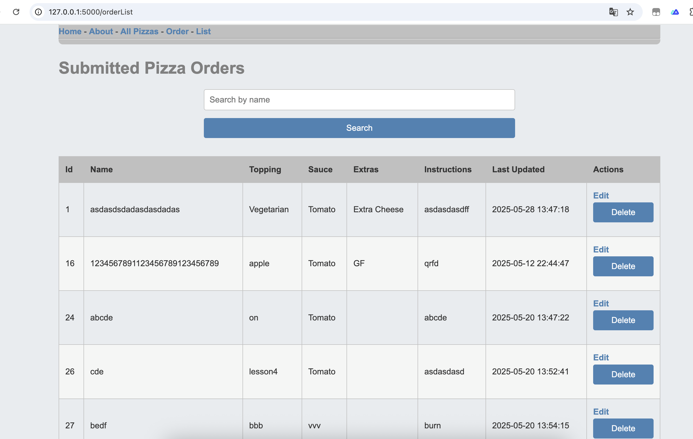
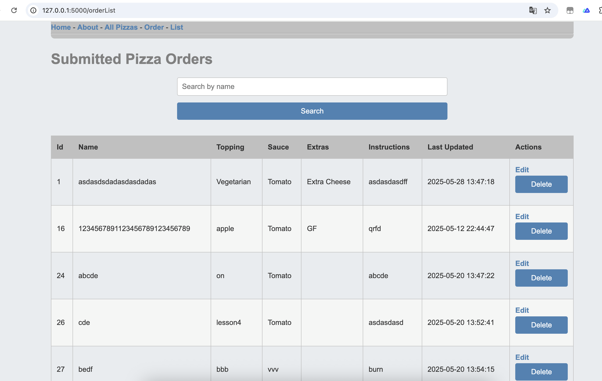

Project Overview
In the Year 13 Digital Technologies Programming (13DTP) course at Burnside High School, students develop an advanced, database-backed web application, leveraging the cross-platform capabilities of web browsers on devices such as smartphones, TVs, and smart appliances. This project immerses students in software engineering and computer science practices, requiring them to design, code, test, and refine a sophisticated web-app. Students utilize WTForms to create secure, validated, and user-friendly forms for data input and interaction, enhancing the application’s usability. Database interactions are managed using SQLAlchemy, an Object-Relational Mapping (ORM) tool, to streamline data operations, improve code maintainability, and ensure secure, efficient communication with relational databases. Aligned with New Zealand’s Digital Technologies Curriculum, the year-long project fosters independent problem-solving, advanced programming skills, and project management, culminating in a robust, user-centered digital outcome.
Learning Objectives
- · Master advanced programming concepts to develop a complex web application, integrating WTForms for secure and validated form handling.
- · Design and implement relational databases using SQLAlchemy to support dynamic, data-driven web functionalities with efficient and maintainable code.
- · Apply software engineering principles, including iterative development, testing, and debugging, to create a reliable and scalable digital outcome.
- · Create intuitive and accessible user interfaces, leveraging WTForms to enhance form usability and user interaction.
- · Develop computational thinking skills to decompose complex problems, design algorithms, and optimize code efficiency using SQLAlchemy for database operations.
- · Enhance project management skills by independently planning, tracking, and delivering a year-long software development project.
- · Demonstrate critical reflection by analyzing development processes, refining the web-app based on testing and feedback, and evaluating the effectiveness of WTForms and SQLAlchemy in achieving project goals.

 
